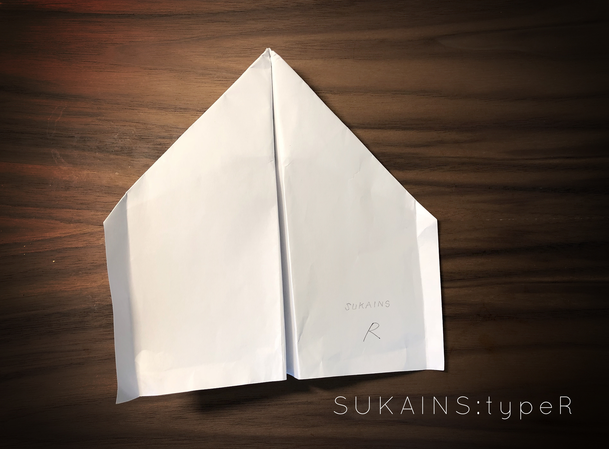
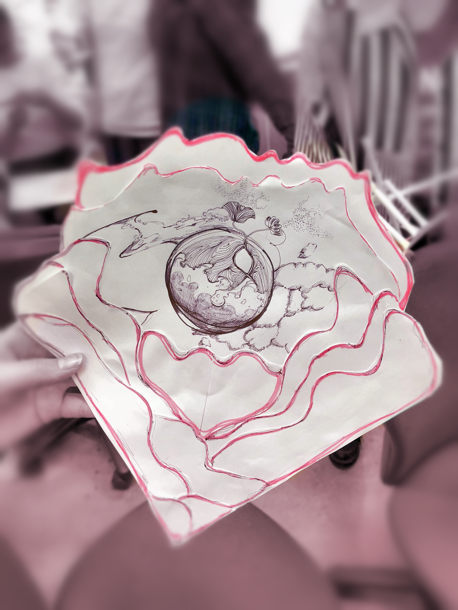
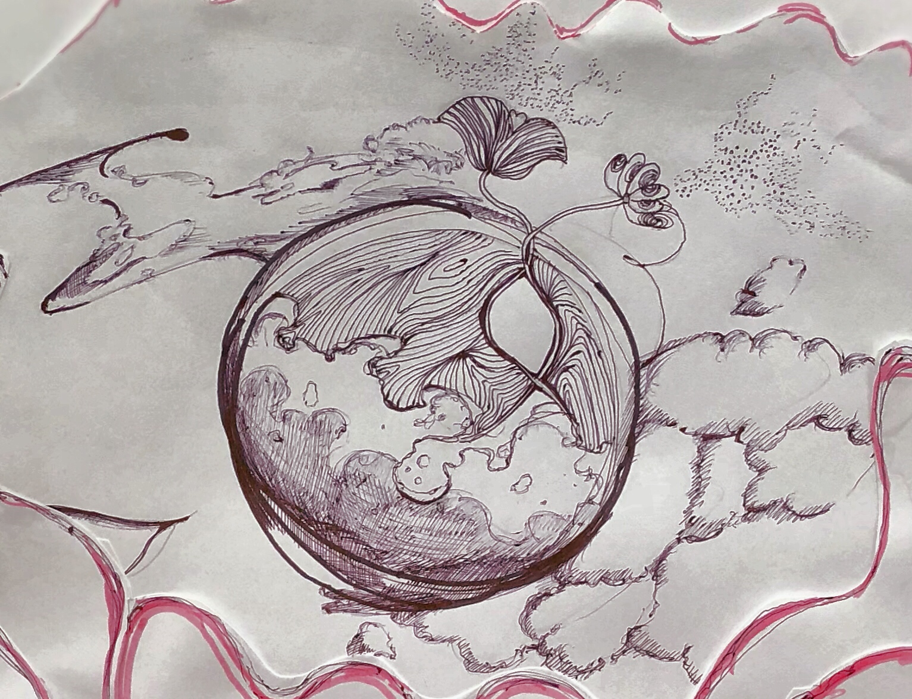

＜紙飛行機の滞空時間をのばす＞
授業のながれ
6/7(木)
紙（A4コピー用紙）を使って、制作を行う。
紙（A4コピー用紙）という素材について学ぶ。
A4サイズのコピー用紙を使って2900mmの高さまで届くような構造物をつくる。（思考２分、組み立て５分を２回）
紙飛行機をつくって、「滞空時間のギネス世界記録」を目指す...(~金曜につづく)
6/8(金)
昨日の反省点を活かす。飛行実験による試行錯誤を重ね、紙飛行機の精度を向上させていく。
チームごとに記録をはかる。
まとめ・授業のふりかえり。
トライアンドエラーの積み重ねに比例するように、経験値や知識量をあげていくこと。
＜紙飛行機制作＞
私の紙飛行機は「滞空時間29.2秒」でギネス世界記録を更新した人が使っていた紙飛行機と同じものを折って、少しだけ改良した。
１.飛行機の先端部を鋭角にカット。
２.カットした箇所をスティックのりで接着。
３.翼の後ろ、側部に若干の角度をつける。（端を折る）


最高滞空時間：８秒３６
本番飛行テストの記録：１秒３８
失敗の原因は投げ方にある。 本来、まっすぐ前に飛ぶように投げるが、この紙飛行機はそれに適応した形状ではない。 「SUKAINS」は上に飛ばして徐々に空中を旋回しながら下降していく「旋回下降」に適した飛行形態なのだ。 （斜め上に投げるのではなくほぼ真上の方向に向けて飛ばすのが正しい。） 緊張していてそのことが頭から離れてしまっていたようだ。
＜人を感動させるペーパークラフト＞
授業の流れ
6/13(水)二人一組になって、一緒に過ごした時間の中でお互いについての理解を深める。
（パートナーのことを分析・観察していなければ相手を喜ばせるデザインはできない！）
２限〜３限の最初の３０分の間話し合う。（昼食も一緒に過ごした。）
３〜４限（３時まで）ペーパークラフトの制作
＜パートナーとの話し合い＞
話しを通して、まず驚いたのが自分の予想していた性格とは全く正反対の一面を持っていたという点だ。
話のなかで主だった話題は二つだ。
まず、人生経験の中で、人と上手くコミュニケーションがとれていないという悩みを打ち明けてくれた。
パートナーいわく、自分のやりたいことに対する熱量が他と合わなかったり、人間関係において心配性なので、相手との距離感を上手く縮めていくのが難しいと言う。
これに関しては私も共感できるところが多くて、自分と重ね合わせることでより理解が深まった。
次に、「作品制作」についての話で、今後やってみたいことや、今作っている作品についての話をした。
意識が高く、上昇思考の彼女は熱々と作品制作について語ってくれた。
作品制作はこれも含めて、経験や知識を応用することでもあるし、作品を発表するということに慣れることを目標にしているようにも感じて、
一番情熱を感じ取れるところだった。
 
上二つの写真は実際に私がパートナーのためにつくったペーパークラフトだ。
これはS・K さんの精神状態（自分の内に秘めた思いをもっと外に出したいという思い）を、自然に例えて、イラストで表現した。
作品の内なる広がりではなく、外側への広がりがあることを示している。
周りの（赤の）波模様はエネルギーや、世界観の広がりを意味している。
総じてこの作品はパートナーに対しての自分からのこうもなってほしいという「願い」のようなものだ。
最後の作品交換は時間がなく、手渡して一言二言話したくらいだった。
もっと時間があれば作品の意図などについても語り合ってみたかった。